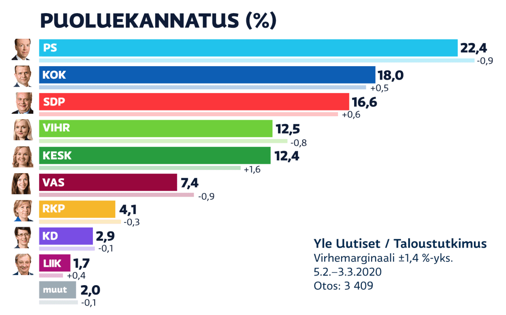

Mukavaa kun päätit osallistua kyselyymme Suomen puolueista! Kysymme sinulta kyselyssä, mitä puoluetta kannatat. Keräämme mahdollisimman paljon vastauksia Suomalaisilta, ja laskemme puoluevalintanne yhteen, ja tämän pohjalta julkaisemme Helsingin Uutisiin artikkelin tästä asiasta. Vastaajat pysyväät tietysti anonyymeinä, eikä kenenkään henkilöllisyyttä vuodateta.
Tässä taulukossa näkyy Suomen puolueiden tämänhetkinen kannattajamäärä. Taulukon tulos perustuu tämän kevään kyselymme tuloksiin ja se on tehty yhteistyössä Ylen kanssa: 
Vastaathan kyselyymme rehellisesti, etkä jaa mitään hnkilökohtaisia tietojasi, kuten sähköpostiasi tai salasanojasi